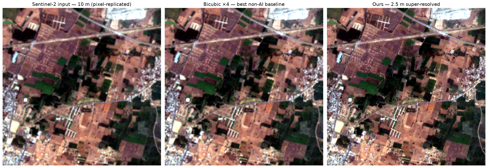
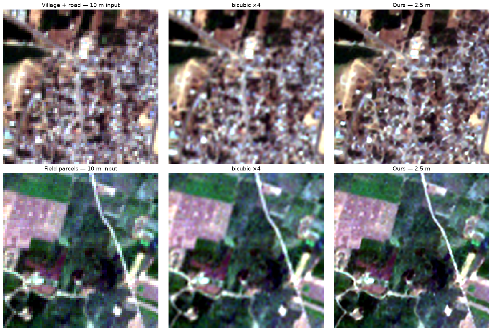
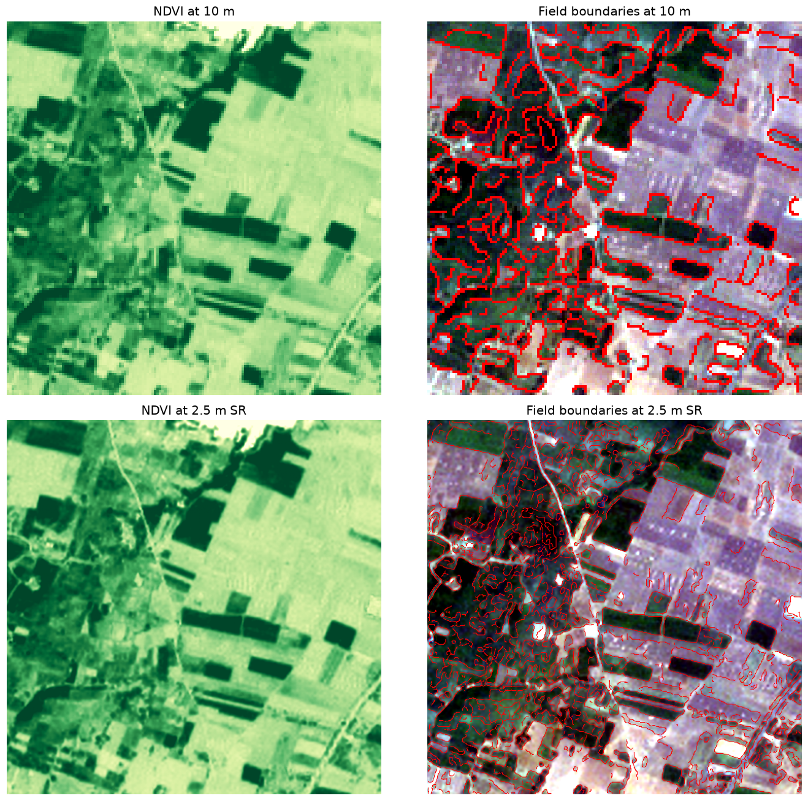
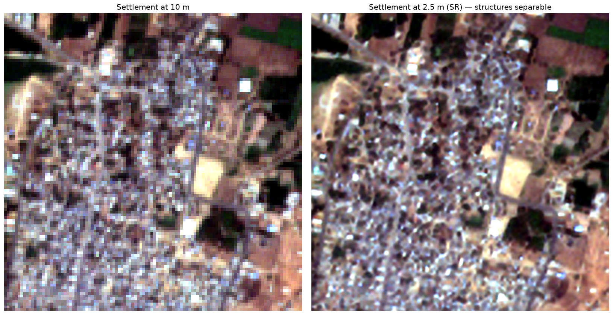
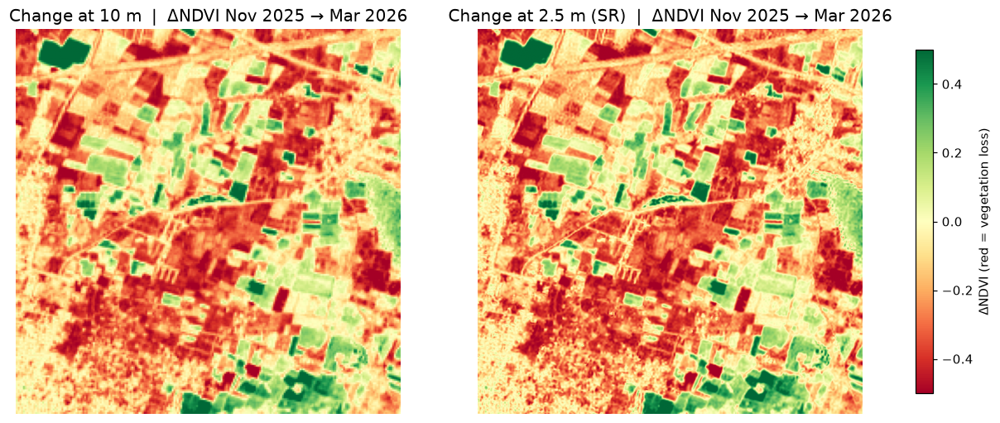

Deep Learning Super-Resolution Mapping from Medium-Resolution Satellite Imagery — Sentinel-2 10 m → 2.5 m with per-pixel trust.
Medium-resolution imagery (10–30 m) underpins operational Earth observation in India: free, national coverage, five-day revisit. But at 10 m a village road is one pixel wide, a small building is sub-pixel, and a field boundary is a blur. Analysts face a hard choice:
| Option | Cost | Consequence |
|---|---|---|
| Free 10 m Sentinel-2 | Free, national, 5-day revisit | Cannot resolve the features the decision depends on |
| Commercial sub-metre | Thousands of rupees per scene | Unaffordable at state scale; infrequent revisit |
predict() call, so they can be compared honestly.
Sentinel-2 L2A (B04 B03 B02 B08 @ 10 m + SCL)
|
[1] Preprocessing ......... SCL cloud mask -> reflectance scale -> tile 128px/32 overlap
|
[2] Branches (common interface, tiling internal to each)
|-- Bicubic ........ baseline control
|-- SEN2SR ......... fidelity, hard radiometric constraint (ESA OpenSR)
|-- LDSR-S2 ........ generative detail + per-pixel sigma from N samples
'-- Ours ........... SPAN CNN trained on SEN2VENuS / KUDALIAR (Telangana)
|
[3] Trust layer ........... LR-consistency | spectral angle | branch spread | sigma
| -> fused per-pixel confidence in [0,1]
[4] Validation ............ Wald protocol | consistency check | calibration curve
|
[5] Product ............... 2.5 m COG GeoTIFF: 4 SR bands + sigma + confidence
|
[6] Downstream ............ field boundaries | urban structure | change detection
| Module | Responsibility |
|---|---|
src/srm/preprocess/ | SCL masking, reflectance scaling, tile geometry, Hann blend weights |
src/srm/models/ | Branch wrappers behind one interface; feathered tiled inference |
src/srm/trust/ | PSF downsampling, LR-consistency, spectral angle, ΔNDVI, confidence fusion |
src/srm/validate/ | Wald protocol, consistency check, calibration curve, downstream tasks |
src/srm/metrics/ | Reflectance-aware PSNR / SSIM / SAM / ERGAS |
src/srm/train/ | Composite loss, shard dataset, model construction |
src/srm/io/ | COG writing, CRS and footprint preservation and verification |
src/srm/data/ | SEN2VENuS nested-archive pair loader, ×2/×4 pairing modes |
| Layer | Choice | Rationale |
|---|---|---|
| Language / ML | Python 3.12, PyTorch 2.13 | Geospatial + ML ecosystem; MPS support makes local training viable |
| Geospatial I/O | rasterio / rioxarray (GDAL) | Correct CRS and affine handling; native COG writing |
| Fidelity model | SEN2SR — SPAN CNN, 472k params | Hard radiometric constraint built in; CC0; peer-reviewed (RSE 2025) |
| Generative model | LDSR-S2 latent diffusion, 169M params | Native per-pixel uncertainty through stochastic sampling |
| Our model | SPAN CNN, warm-started | Converges in minutes on free compute; a from-scratch transformer would not converge in schedule |
| Interface | Streamlit (two apps) | Viewer is a viewer; a custom SPA would consume the budget for no capability |
Real Sentinel-2 ↔ VENµS pairs acquired the same day over the same ground, already co-registered.
| Site | Location | Patches | Role |
|---|---|---|---|
| KUDALIAR | Telangana, India (tile 44QKE) | 7,269 | Primary — puts real Indian terrain in training |
| ANJI | China | 2,312 | Mixed agriculture / forest |
| MAD-AMBO | Madagascar | 1,442 | Tropical |
| SUDOUE-4 | France | 935 | Agricultural parcels |
| ESTUAMAR | Spain | 911 | Coastal / estuary |
Two packed datasets exist: KUDALIAR-only (5,400 train / 600 val) and multi-site (8,640 / 960 across all five sites). Both were trained; the multi-site model is the one reported throughout this document, on the evidence in §7.6.
| Mode | Input | Target | Scale |
|---|---|---|---|
--scale 2 | real S2 10 m | real VENµS 5 m | ×2, fully real |
--scale 4 (used) | S2 degraded to 20 m via the S2 PSF | real VENµS 5 m | ×4, real HR target |
Only the input is synthetic, and it is synthesised with the sensor's own response rather than bicubic — a model trained to invert bicubic learns the wrong operator. This is Wald's protocol applied to training rather than evaluation, and it is what makes a ×4 claim defensible without owning 2.5 m imagery.
Two dates fetched anonymously from the AWS public Sentinel-2 archive via Earth Search STAC (no Copernicus account required), from the same MGRS tile as the training data:
| Scene | Date | Cloud | Size | Purpose |
|---|---|---|---|---|
| S2B_44QKE_20251113 | 13 Nov 2025 | 0.0% | 1289×1344 @10 m | Rabi sowing — change-detection reference |
| S2A_44QKE_20260310 | 10 Mar 2026 | 0.0% | 1289×1344 @10 m | Pre-harvest — primary validation scene |
4 in, 6 out. Input is the four natively-10 m bands in model order
B04, B03, B02, B08 (red, green, blue, NIR) — order verified from the model's
own metadata, and not alphabetical. NIR is included deliberately: without it NDVI is
impossible and every crop application collapses. Output adds sigma and
confidence. The 20 m red-edge/SWIR and 60 m atmospheric bands are out
of scope for v1.
SPAN CNN (from ESA's SEN2SRLite release), warm-started from the released weights and fine-tuned on SEN2VENµS. Two variants exist: lite (24 channels, 6 blocks, 572k params — the model reported here) and wide (48 channels, 10 blocks, 3.63M params).
Deliberately not the standard ESRGAN recipe. VGG-19 perceptual loss is trained on 8-bit consumer photographs and mismatched to 16-bit reflectance; plain adversarial training cost Puri & Kotze roughly 0.2 SSIM in artefacts. We optimise what the problem statement actually asks for:
| Term | Weight | Purpose |
|---|---|---|
| L1 on reflectance | 1.0 | Radiometric accuracy |
| LR-consistency through the PSF | 0.5 | Do not invent radiometry |
| Spectral angle (SAM) | 0.1 | Spectral consistency, brightness-invariant |
| Gradient | 0.1 | Sharpness without a photographic prior |
Augmentation is dihedral only (rotations, flips). No colour jitter: shifting reflectance would teach the model that radiometry is negotiable, the one thing this pipeline must not learn.
| Setting | Value |
|---|---|
| Data | 8,640 train / 960 val across 5 sites (KUDALIAR + 4 biomes), ×4 mode |
| Schedule | 50 epochs, AdamW, lr 2e-4, cosine anneal, batch 16 |
| Hardware | Apple M5 Pro (MPS) — 50 s/epoch, 42 min total |
| Best checkpoint | epoch 35 — val PSNR 38.65 dB, SSIM 0.9435 (on the harder 5-biome split) |
| Resilience | Per-epoch checkpointing; --resume restores model, optimiser, scaler, epoch |
Local training on Apple Silicon proved ~23× faster than CPU (70 ms vs 1,646 ms per step), making a free-tier GPU optional rather than required for this model size. A Kaggle GPU pipeline exists for larger variants.
Four independent signals, fused into one per-pixel confidence value in [0,1].
| Signal | Weight | What it measures | Why it catches invention |
|---|---|---|---|
| LR-consistency | 0.4 | Downsample SR through the S2 PSF, difference against the true input | Physical, not learned. Disagreement means radiometry the sensor never recorded |
| Spectral angle | 0.2 | Per-pixel SAM, input vs downsampled SR | Catches colour drift that L1 error hides; brightness-invariant |
| Branch disagreement | 0.2 | Normalised difference between fidelity and generative branches | Where a conservative regressor and a diffusion model disagree, detail is invented |
| Sampling sigma | 0.2 | Std-dev across N diffusion samples | Certain pixels barely move between runs; hallucinated structure varies |
A fifth diagnostic, ΔNDVI, is reported but not fused: it measures whether super-resolution shifted the vegetation signal analysts depend on. Measured at 0.011–0.013 mean absolute change on both real Telangana scenes — the physical quantity is preserved while boundaries sharpen.
Confidence ships as band 6 of every product. This is business rule BR-1: no super-resolved product may be written without it, so a downstream user cannot obtain the sharpened pixels stripped of their caveat.
There is no 2.5 m ground truth for an arbitrary Sentinel-2 scene, so the model is validated where truth exists: degrade the reference ×4, super-resolve it back, score against the original. Degradation uses a Gaussian approximation of the Sentinel-2 MTF, not bicubic — a model trained and tested on bicubic learns to invert bicubic and then fails on real imagery whose blur comes from the instrument optics.
Requires no ground truth, so it runs on every real scene. This is what makes the system self-monitoring rather than validated-once.
Does the confidence map actually predict error? Pixels are binned by predicted confidence and their observed error measured. A flat curve would mean the confidence map is decoration.
The claim "analytical utility improved" is different from "PSNR improved". We run an analysis on real VENµS 5 m imagery to obtain a reference result, then the same analysis on each candidate, and score agreement with BSDS-style boundary matching (2 px tolerance). Super-resolution improves utility iff it beats bicubic on this.
150 validation patches, boundary F1 against analyses of real VENµS 5 m imagery:
| Task | bicubic | SEN2SR | Ours | Ours gain |
|---|---|---|---|---|
| Field boundaries (NDVI) | 0.800 | 0.862 | 0.917 | +0.117 |
| Structural edges (urban) | 0.807 | 0.875 | 0.914 | +0.107 |
data/raw/telangana_*.tif (78.618–78.741°E, 17.799–17.921°N) falls
entirely inside KUDALIAR tile 44QKE (78.502–78.893°E,
17.680–18.078°N) — the tile the model trained on. Figures from these scenes are therefore
a qualitative demonstration over familiar ground, and are labelled as such
throughout this document. Every quantitative claim in §7.1, §7.3 and §7.4 is
measured elsewhere: on held-out SEN2VENuS patches, or on test_ref_2p5m.tif
(77.03°E, 28.0°N) roughly 1,200 km away.What the demonstration shows: the sensor-consistency check runs on real imagery with no ground truth, and our model reproduces the input through the Sentinel-2 point-spread function more faithfully than either baseline — 0.00125 mean absolute reflectance against SEN2SR's 0.00246. That property is a physical guarantee rather than a fitted score, so it remains meaningful even over training ground.
test_ref_2p5m.tif, ~1,200 km from any training data. Degrade ×4
through the Sentinel-2 PSF, super-resolve back, score against the original.
| Branch | PSNR (dB) | SSIM | SAM (°) | ERGAS | RMSE |
|---|---|---|---|---|---|
| bicubic | 32.68 | 0.7965 | 2.025 | 3.735 | 0.02323 |
| SEN2SR | 33.21 | 0.8194 | 1.904 | 3.500 | 0.02184 |
| Ours | 33.68 | 0.8406 | 1.808 | 3.331 | 0.02070 |
The SEN2VENuS split scores a cross-sensor task (S2 → VENuS) and the Wald tile is a single scene. This instrument is neither: real Sentinel-2 on both sides, 400 patches, drawn only from locations held out of training. It is what hyper-parameters are selected on.
| Model | PSNR (dB) | SSIM | SAM (°) | RMSE | ERGAS |
|---|---|---|---|---|---|
| bicubic | 35.580 | 0.8702 | 2.917 | 0.01710 | 5.529 |
| SEN2SR | 36.395 | 0.8929 | 2.704 | 0.01555 | 5.190 |
| Ours | 37.182 | 0.9101 | 2.462 | 0.01421 | 6.995 |
The ordering holds on the instrument that matters most for selection. One exception is recorded rather than hidden: ERGAS is worse than both baselines here, while better on the Wald tile. ERGAS normalises band RMSE by each band's mean, so it is sensitive to how dark the scene is; we have not chased this and do not claim it.
Binning pixels by predicted confidence and measuring their actual error:
| Confidence bin | 0.0–0.1 | 0.3–0.4 | 0.6–0.7 | 0.8–0.9 | 0.9–1.0 |
|---|---|---|---|---|---|
| Ours — mean abs error | 0.0413 | 0.0411 | 0.0439 | 0.0138 | 0.0122 |
| bicubic — mean abs error | 0.0506 | 0.0294 | 0.0226 | 0.0151 | 0.0082 |


An explicit accounting, because a reviewer can check it in one file.
| Component | Origin |
|---|---|
| SPAN CNN backbone | Not ours. Imported directly from ESA's sen2sr package
(models.opensr_baseline.cnn.CNNSR). We did not design an architecture. |
| Initial weights | Not ours. Warm-started from the released SEN2SRLite checkpoint, 204/204 tensors transferred. |
| Trained weights | Ours. 8,640 patches across five sites, 50 epochs.
checkpoints/best.pt did not exist before this project. |
| Training regime | Ours. The five-site mix with KUDALIAR capped so India does not dominate; the ×4 pairing that degrades input to 20 m against real 5 m VENuS. |
| Objective | Ours. The individual terms exist in the literature; this combination — and tying the consistency term to the same physical check we run at deployment — is our design. |
| Trust layer | Ours, and the strongest original contribution. Four independent signals fused into one per-pixel confidence, with the calibration measured rather than asserted (§7.5, including where it is weak). |
| Three-instrument evaluation | Ours. Discovering that the cross-sensor split disagrees with real Sentinel-2, and selecting on the latter. |



| App | Purpose | Runs models? |
|---|---|---|
app/demo.py | Presentation. Reads precomputed products only, so it cannot fail live | No |
app/testbench.py | Testing. Loads weights, runs inference interactively, surfaces failures | Yes |
The test bench offers scene selection or upload, optional SCL cloud masking, crop controls, branch and device selection, and a Wald-protocol toggle that degrades the loaded scene so real PSNR/SSIM can be measured on any imagery. Five tabs: comparison, trust layer, metrics, NDVI, export.
# Super-resolve a scene -> 6-band COG with sigma + confidence
python scripts/run_inference.py --input scene.tif --scl scene_SCL.tif \
--reflectance --out out/scene_sr --branches bicubic,sen2sr,ours --device mps
# Benchmark every branch (Wald protocol + calibration curve)
python scripts/evaluate.py --input data/raw/test_ref_2p5m.tif --branches bicubic,sen2sr,ours,ldsr
# Downstream task evaluation
python scripts/eval_downstream.py --n 150 --device mps
# Fetch real Sentinel-2 (anonymous, no account)
python scripts/fetch_s2_aws.py --bbox 78.62 17.80 78.74 17.92 --tile 44QKE \
--date-range 2026-02-15/2026-03-31 --out data/raw/telangana
# Train
python scripts/fetch_sen2venus.py --sites KUDALIAR
python scripts/build_dataset.py --sites KUDALIAR --scale 4
python scripts/train.py --data data/interim/sen2venus_x4 --epochs 40 --device mps
| Band | Name | Contents |
|---|---|---|
| 1–4 | B04, B03, B02, B08 | Super-resolved reflectance @ 2.5 m |
| 5 | sigma | Per-pixel sampling uncertainty |
| 6 | confidence | Fused trust score in [0,1] |
Cloud-Optimised GeoTIFF with overviews. Footprint preservation is verified, not
assumed: the affine transform is rescaled so pixel size divides by 4 while bounds
stay fixed, and check_footprint() runs after every write. Measured drift across
every product produced to date: 0.00 m.
Four non-obvious problems encountered and solved. Each cost real time and is recorded so it is not re-encountered.
| Finding | Impact | Resolution |
|---|---|---|
Our own Hann window zeroed the first row and column of every
tiled product. np.hanning(2n) starts at exactly 0.0, and
tiled_predict normalises by accumulated weight |
Inverted the headline result. ~4.5 dB PSNR on a 128 px output. It hit every branch that tiles — ours and SEN2SR — but not bicubic, so bicubic appeared to beat every learned model by 2.7 dB. An earlier version of this document reported that as a genuine accuracy-for-fidelity trade-off. There was no trade-off; there was a defect. Corollary: test-time augmentation appeared to buy +1.6 dB, because its eight transforms filled in each other's zeroed rings. It buys +0.07 dB. | Drop the endpoint, floor the ramp at 1e-3; pinned by 22 tests. Every benchmark in this document was re-run afterwards. |
Upstream tiling bug. sen2sr.predict_large derives output
height from input width | Silently corrupts every non-square raster | Replaced with our own Hann-feathered tiling |
| Patch filter measured darkness, not validity. A zero-fraction no-data test rejected 129 of 129 patches | These archives have no no-data sentinel; ~30% of pixels are legitimately 0 over water and closed canopy, so whole biomes were being discarded | Gate on contrast instead |
| NDVI epsilon blowup. Negative SR reflectance drove the denominator below epsilon | Ratio exploded to ~1e5; surfaced as a physically impossible mean |ΔNDVI| of 1.15 during change detection | Clamp inputs at 0, clip output to [-1,1] |
Cloud masking specified but never called. scl_mask()
existed; nothing invoked it | A cloudy scene would have been sharpened into convincing, meaningless texture with no flag — violating our own business rule | Wired into the CLI with 20 m→10 m resampling and reporting |
| Priority | Work | Rationale |
|---|---|---|
| 1 | Bhoonidhi LISS-IV validation — an independent Indian high-resolution reference | The one node of our flow diagram with no external reference behind it; gated on data-access approval |
| 2 | Resolve the ERGAS discrepancy between instruments | Currently an unexplained inconsistency in our own results |
| 3 | Loss ablation (drop consistency / SAM / gradient in turn) | Turns the loss design from an assertion into a measured finding |
| 2 | Larger multi-site training set (all 29 SEN2VENµS sites) | §7.6 shows diversity helps but with small margins; more data would sharpen the result |
| 3 | Bhoonidhi LISS-IV validation | Independent Indian HR reference; highest credibility value, gated on data access |
| 4 | 20 m band support (red-edge, SWIR) | Unlocks crop-stress and moisture indices |
| 6 | Full-tile windowed inference | Engineering, not science — process a complete 10980² granule |
opensr-test benchmark framework.